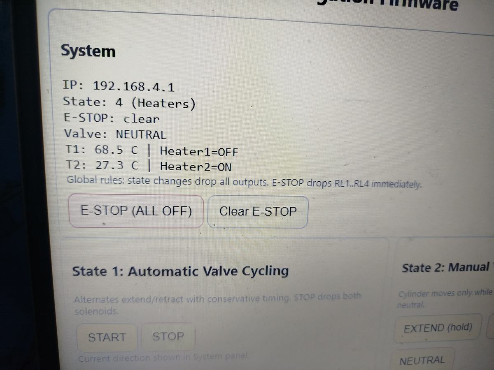
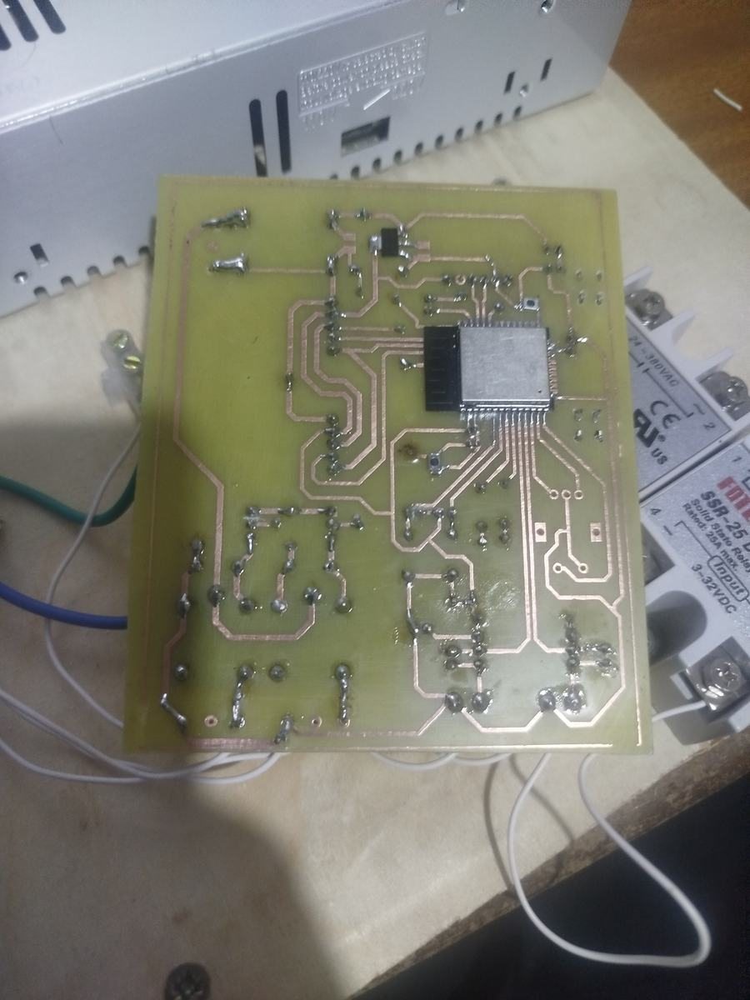
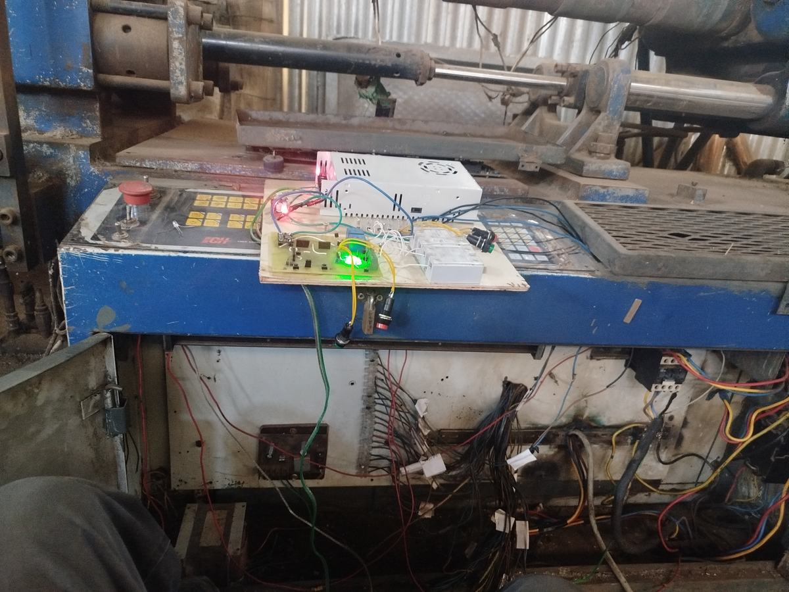
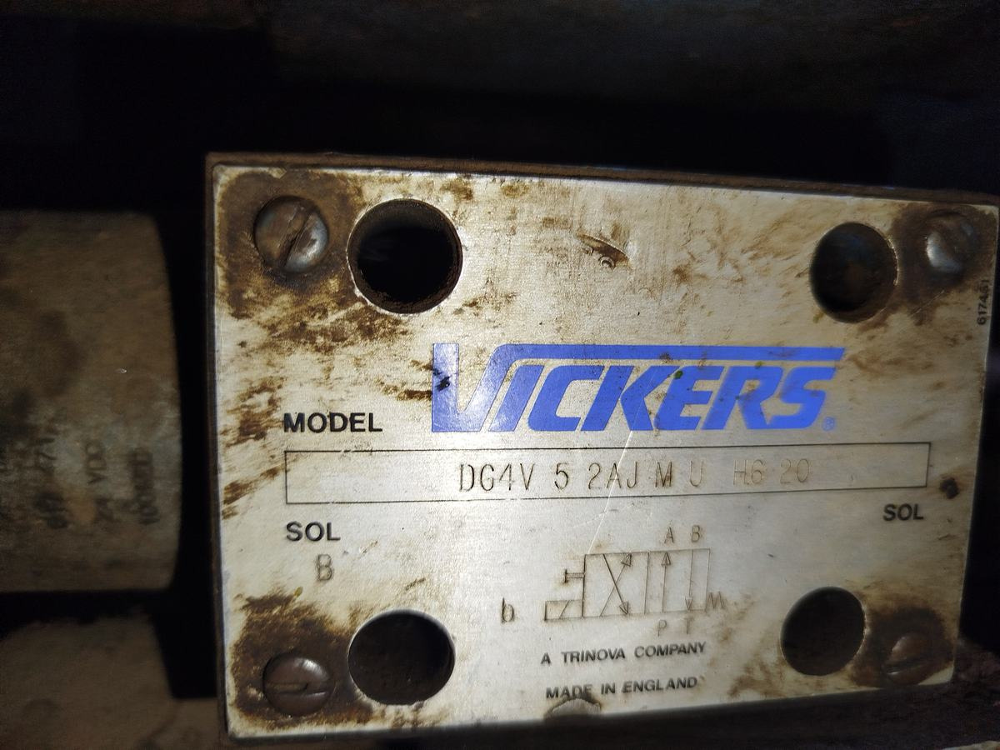
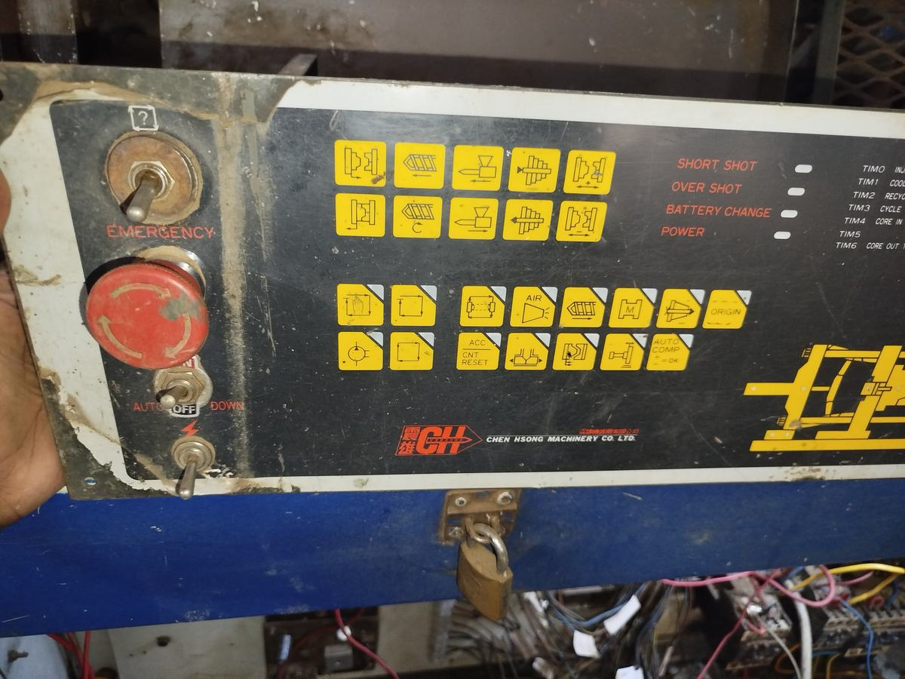
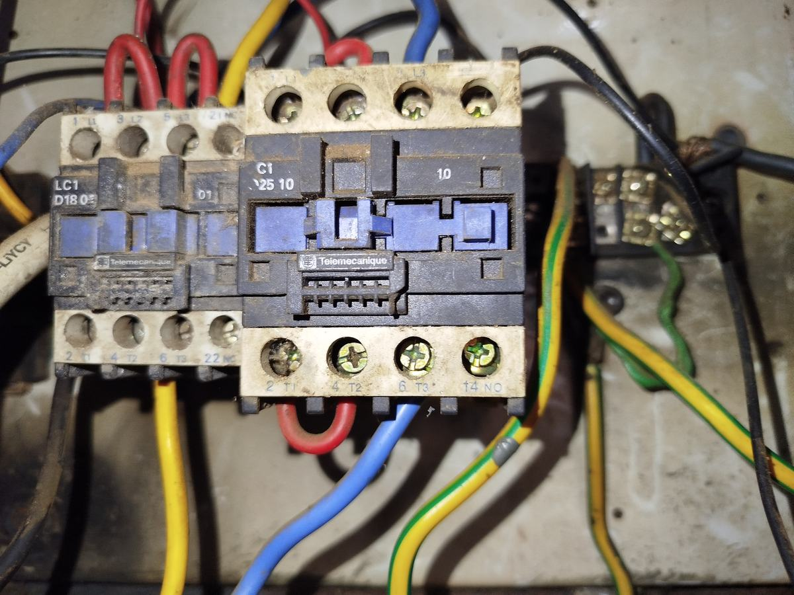

Chen Hsong injection moulding machine — control system rebuild
Vickers DG4V-5-2AJ-M-U-H6-20 directional valves were traced and function-tested, and the RKC barrel temperature controllers verified. The contactor and terminal cabinet was stripped and rewired to a documented state. That made the machine safe to power, but it did not run: the control board was the fault, and no replacement part was available.
The I/O map was reconstructed from the machine's original manual, annotated by hand, and a replacement board etched in-house. Firmware is a five-state machine — idle, automatic valve cycling, manual from the interface, manual from hardware buttons, and heaters — with a solenoid interlock that prevents both directional relays being energised together under any state. Heater control runs two MAX6675 thermocouple channels driving solid-state relays, with a fault flag per channel. Any state change drops all outputs before the new state is applied.
The point was not only to make the machine run. A control board designed here can be changed at will — new cycle logic, new interlocks, new instrumentation — without waiting on a vendor abroad. The same workshop holds a Chen-Ho milling machine still on its original Anilam control, queued for a LinuxCNC retrofit on the same reasoning.





